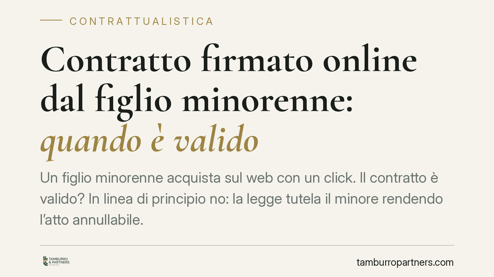

Contratto firmato online dal figlio minorenne: quando è valido
Un figlio minorenne acquista sul web con un click. Il contratto è valido? In linea di principio no: la legge tutela il minore rendendo l'atto annullabile. Esistono però eccezioni che è bene conoscere, sia per chi vende sia per i genitori che scoprono spese non autorizzate.

Il quadro: perché il minore non può contrattare da solo
Il nostro ordinamento parte da un principio semplice: chi non ha compiuto diciotto anni non ha la piena capacità di agire, cioè la capacità di compiere validamente atti giuridici che incidono sul proprio patrimonio. Questa protezione vale anche online, dove basta inserire dati e cliccare per concludere un contratto.
La conseguenza non è la nullità automatica, ma l'annullabilità. È una differenza tecnica ma decisiva: il contratto produce effetti finché qualcuno non lo fa annullare dal giudice.
Inquadramento normativo
L'art. 1425 del codice civile stabilisce che il contratto è annullabile quando una delle parti era legalmente incapace di contrattare. Il minore rientra in questa categoria. L'annullamento può essere chiesto, di regola, dal rappresentante legale del minore (i genitori) o dal minore stesso una volta divenuto maggiorenne, entro cinque anni.
Esiste però un limite importante fissato dall'art. 1426 cod. civ.: se il minore ha occultato con raggiri la propria minore età, il contratto non è annullabile. La semplice dichiarazione di essere maggiorenne, secondo la giurisprudenza prevalente, non basta a integrare il raggiro: serve un artificio idoneo a trarre concretamente in inganno la controparte. Diverso è, ad esempio, l'uso di documenti falsi o di dati altrui.
Ordinaria e straordinaria amministrazione
Il punto pratico più delicato riguarda il tipo di atto. La prassi distingue tra atti di ordinaria amministrazione e atti di straordinaria amministrazione.
Gli acquisti di modesto valore, in linea con le abitudini di un ragazzo della sua età e con la sua disponibilità economica (l'acquisto di un libro, di un videogioco, di una ricarica di piccolo importo), tendono a essere considerati validi o comunque non contestabili con successo. Sono operazioni che rientrano nella normalità della vita quotidiana del minore.
Gli acquisti di importo rilevante, gli abbonamenti onerosi a rinnovo automatico, gli acquisti di beni costosi o le operazioni finanziarie escono da questo perimetro. Qui l'annullamento ha maggiori probabilità di essere riconosciuto, perché si tratta di atti che avrebbero richiesto l'intervento dei genitori.
Cosa cambia per chi vende e per i genitori
Per l'impresa che vende online il rischio è concreto: un contratto stipulato da un minorenne può essere annullato con obbligo di restituzione di quanto pagato. Le clausole con cui l'utente dichiara di essere maggiorenne offrono una tutela limitata, perché da sole non equivalgono al raggiro richiesto dalla legge.
Per i genitori il tema è duplice. Da un lato hanno lo strumento per contestare acquisti non autorizzati dei figli. Dall'altro, se hanno lasciato al minore strumenti di pagamento e credenziali, la loro posizione può risultare più debole, perché in alcuni casi si può configurare una forma di autorizzazione di fatto o una responsabilità per omessa vigilanza.
Cosa fare in concreto
- Verificate subito l'importo e la natura dell'acquisto. Distinguete tra spesa minima e operazione rilevante: cambia radicalmente la possibilità di ottenere l'annullamento.
- Conservate ogni prova. Screenshot dell'ordine, email di conferma, estratti conto e data dell'operazione sono elementi essenziali per una eventuale contestazione.
- Contestate per iscritto e tempestivamente. Inviate al venditore una comunicazione formale che eccepisca la minore età del contraente e chieda l'annullamento e il rimborso.
- Per le imprese: rafforzate le procedure di verifica dell'età e valutate limiti di spesa o conferme aggiuntive per gli acquisti di importo elevato, senza affidarvi alla sola dichiarazione dell'utente.
- Rivolgetevi a un professionista prima di avviare o resistere a una richiesta di annullamento, soprattutto quando gli importi sono significativi o è in discussione un presunto raggiro.
La materia richiede una valutazione caso per caso: il confine tra atto ordinario e straordinario e la sussistenza del raggiro dipendono dai fatti concreti. Consigliamo di analizzare la singola vicenda prima di assumere iniziative.
---
Contributo informativo a cura di Tamburro & Partners - Avv. Giuseppe Tamburro. Non costituisce parere legale.
Ogni contratto ha il suo equilibrio.
Se vuoi una revisione delle clausole o una redazione su misura, scrivi allo studio. Ti rispondiamo entro un giorno lavorativo.